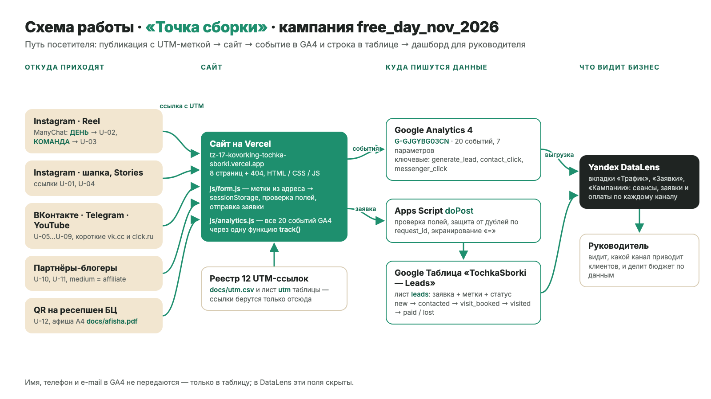
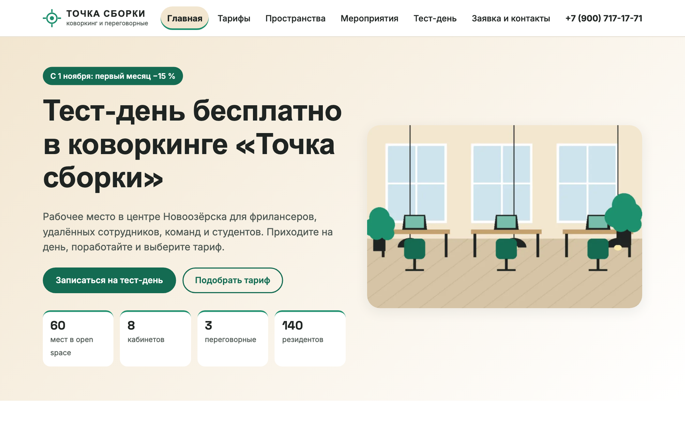
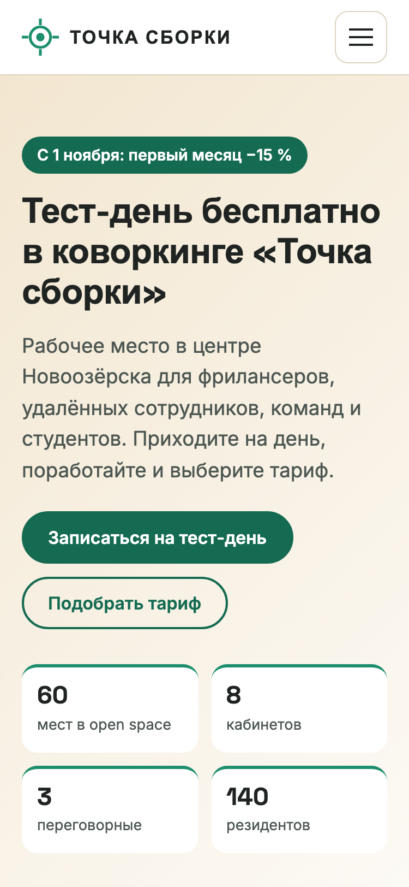
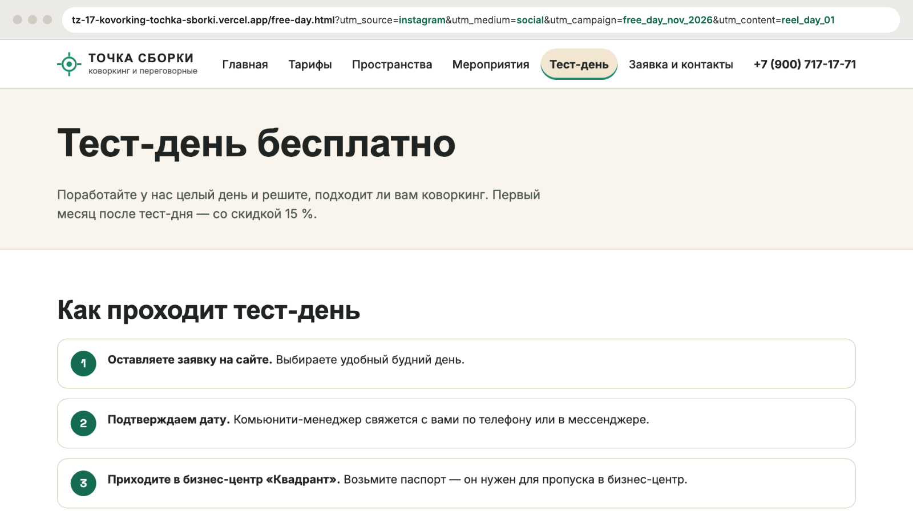
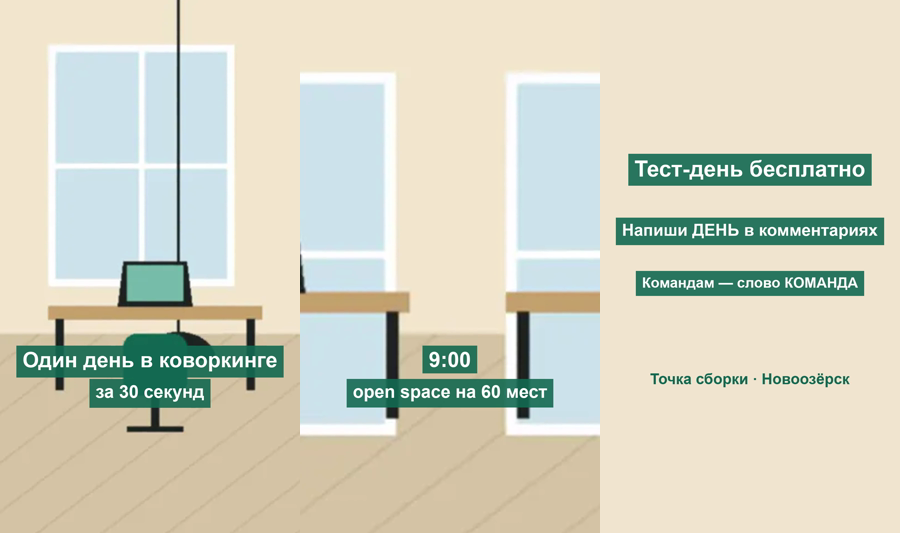
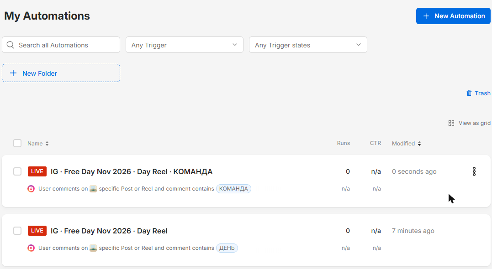

Сайт и сквозная аналитика заявок для коворкинга «Точка сборки»
ТЗ № 17/2026 · ОП.03 «Информационные технологии»
Сдобников Андрей Андреевич, группа РПО 25/2
1
Каналов много — какой приводит клиентов, неизвестно
60мест в open space
8 + 3кабинетов и переговорных
−15 %акция с 1 ноября: тест-день бесплатно
Заявки приходят из шести каналов в разные места — бюджет делится «на глаз»:
InstagramВКонтактеTelegramYouTubeблогерыQR на ресепшен
2
Схема: ссылка с меткой → сайт → GA4 и таблица → дашборд

3
Сайт: 9 страниц на Vercel, адаптив под телефон


9страниц
Lighthouse
78·100·100·100
Claude Code
4
Путь заявки: источник не теряется
1

ссылка U-02 с метками
→
→
3
лист leads:
instagram · social
free_day_nov_2026
reel_day_01 · new
строка + generate_lead
5
Instagram → сайт: ManyChat отвечает сразу


ДЕНЬ → кнопка «Хочу приглашение» (U-02) · КОМАНДА → «Кабинеты» (U-03)
6
GA4 G-GJGYBG03CN: 20 событий, 3 ключевых
20событий
7параметров
3ключевых
// js/form.js:189 — только после ответа приёмника ok: true
track('generate_lead', {
lead_tariff: data.tariff,
lead_source: data.utm_source
});
7
Воронка: 5 шагов от визита до заявки
page_viewоткрыл страницу
space_viewсмотрит зоны
cta_click«Записаться»
form_startначал форму
generate_leadзаявка
Шаги исследования в Explore · открытая и закрытая · по источнику и устройству
8
DataLens: одна ссылка — весь путь клиента
Трафиксеансы, пользователи и заявки по источникам и дням
Заявкивсе заявки, новые и оплаченные; статусы по каналам
Кампаниисеансы и generate_lead из GA4 + заявки и paid из таблицы
// вкладка «Заявки» — индикаторы
COUNTD([request_id])
COUNTD_IF([request_id], [status] = "paid")
// связь GA4 и таблицы: source + campaign + дата
Имя, телефон и e-mail в датасете скрыты.
9
Что получил бизнес
| Было | Стало |
|---|
| заявки в разных местах | одна таблица, статус new → paid |
| источник клиента неизвестен | у каждой заявки канал и кампания |
| ответы в комментариях вручную | ManyChat отвечает сразу |
| бюджет «на глаз» | заявки и оплаты по каналам |
Рекомендация: через 2 недели сравнить оплаты на 100 сеансов и перенести бюджет блогеров в лучший канал.
10
ИИ помог, но проверять пришлось самому
Сделал ИИ (Claude Code)
- страницы, стили, изображения
- код GA4 и Apps Script
- реестр UTM, QR, афиша
Исправлено и не успел
- разметка карточек, 404, дубли
- формулы «=» в таблице
- не успел: ВК, Telegram, YouTube
Все запросы к нейросети — в docs/prompts.md. Аккаунты, публикацию Reel и проверки делал сам.
11
Ссылки
- Сайт
- tz-17-kovorking-tochka-sborki.vercel.app
- Репозиторий
- github.com/dothefuture/tz-17-kovorking-tochka-sborki
- Reel с автоответами
- instagram.com/reel/DfVjbClh6OE
- GA4
- G-GJGYBG03CN
репозиторий
12